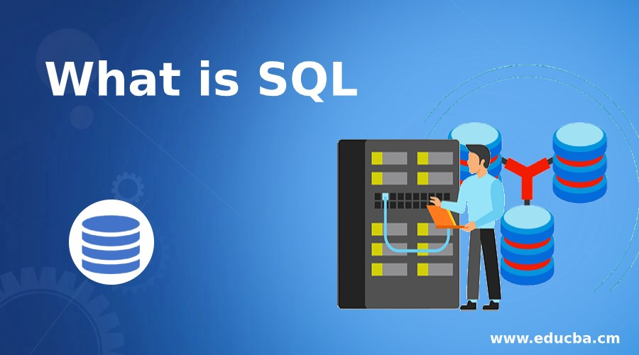
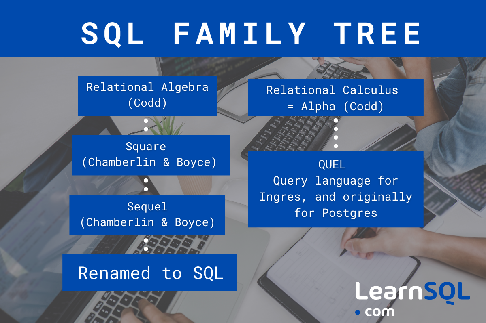
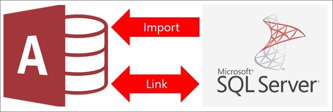
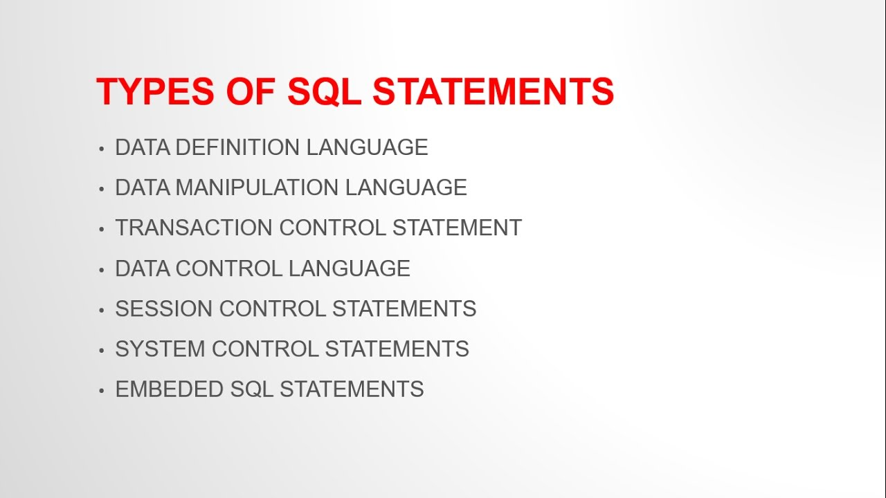

SQL is a programming language.+
- Introduction of SQL
- history of SQL
- features of SQL
1. SQLis a domain-specific language used in programming and designed for managing data held in a
relational database management system (RDBMS),.
2.It is particularly useful in handling structured data.
3.SQL offers two main advantages over older read�write APIs such as ISAM or VSAM.
4.SQL consists of many types of statements.
5. SQL is essentially a declarative language.
.

1.SQL was initially developed at IBM by Donald D.
background and the background-colorproperty.
2.The name SEQUEL was later changed to SQL (dropping the vowels) because "SEQUEL" was a
trademark of the UK-based Hawker Siddeley Dynamics Engineering Limited company.[
3.In the late 1970s, Relational Software
4.The label SQL later became the acronym for Structured Query Language.

1.This SQL keywords reference contains the reserved words in SQL.
2.This SQL keywords reference contains the reserved words in SQL.
3. This SQL keywords reference contains the reserved words in SQL.
4.SQL AS keyword is used to give an alias to table or column names in the queries.

1.An information link is a structured request for data which can be sent to the database. These
specifications include one or more columns, and may include one or more filters
2.Make sure the information link of interest is opened on an Information Link tab.
3.Click SQL....
Response: The Edit SQL dialog is displayed.
4.Sometimes you can use the link pseudo classes to manipulate links to simulate a behaviour.
For example :hover is a class that will change the link once user hover their mouse
over the link.

1.Is a domain-specific language used in programming and designed for managing data held in a
relational database management system
2.Originally based upon relational algebra and tuple relational calculus, SQL consists of many
types of statements.
*Types of SQL Statements
1.Data Definition Language (DDL) Statements.
2.Data Manipulation Language (DML) Statements.
3.Transaction Control Statements.
4.Session Control Statements.
5.System Control Statement.
6.Embedded SQL Statements.
SQL has three main component
- Data Manipulation Language (DML)
- Data Definition Language (DDL)
- Data Control Language (DCL)
